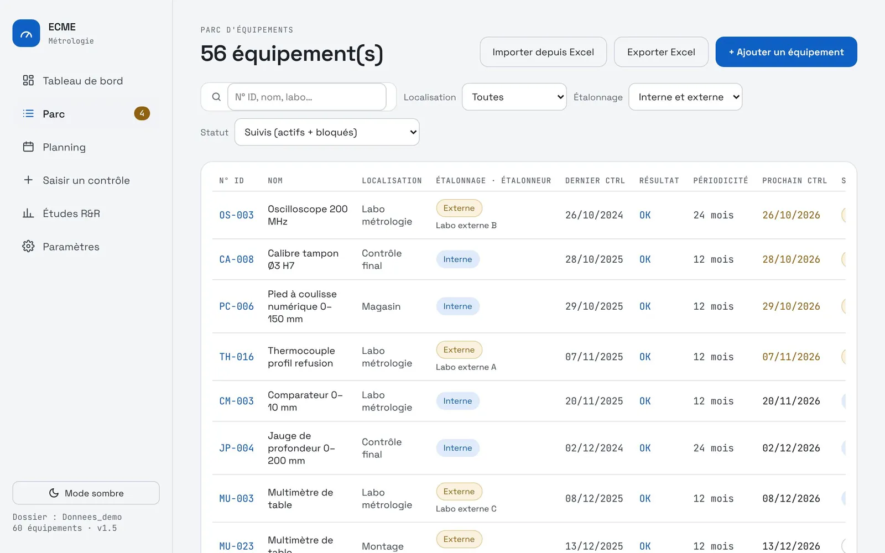
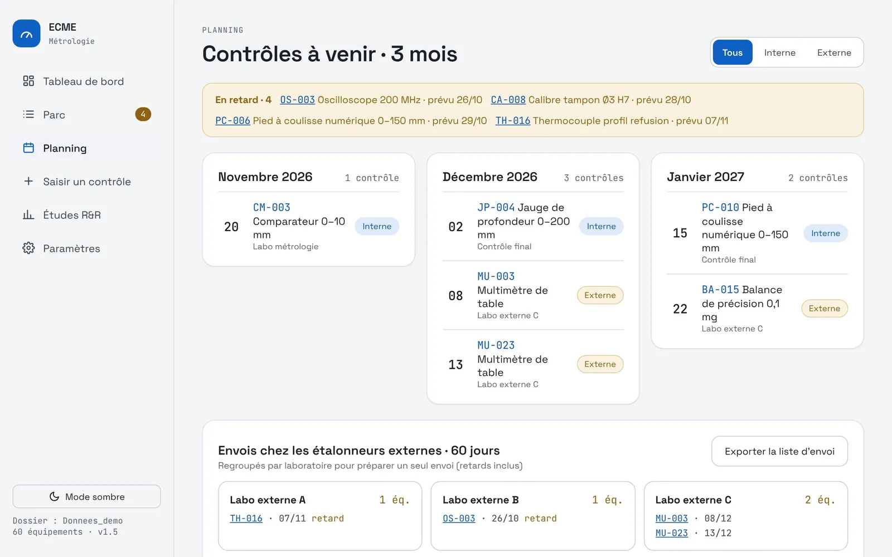

← Revenir aux applications
Métrologie · ECME
Un parc de mesure toujours prêt pour l'audit
Chaque équipement de contrôle, de mesure et d'essai a sa fiche, son statut et sa prochaine échéance. Les retards se voient avant que l'auditeur ne les trouve.
Le problème
Avant : un fichier Excel qui ne disait pas tout
Avant
- Tout le parc dans un fichier Excel
- Des équipements disparus encore listés comme actifs
- Des retards d'étalonnage qui n'en étaient pas
18équipements actifs à tort dans l'ancien fichier
Maintenant
- Chaque équipement a un statut clair : suivi, hors suivi, réformé
- Échéances et retards recalculés chaque jour
- Planning des contrôles internes et des envois externes
- Registre exportable pour le présenter tel quel
Parc à jouret présentable en audit
Sur le terrain
La mise en place de l'outil a révélé 18 équipements encore actifs alors qu'ils n'existaient plus. Dans l'ancien fichier, ils apparaissaient en retard d'étalonnage : l'application a mis l'écart en évidence avant qu'un auditeur ne le fasse.
L'application
Le parc, les échéances, les décisions
Registre et échéances
L'état du parc en un écran.
- Fiche par équipement : localisation, périodicité, étalonnage interne ou externe
- Contrôles en retard et échéances à 30 jours
- Taux de conformité du parc
- Équipements hors suivi et réformés séparés des actifs
- Import depuis Excel, export du registre
Contrôles et planning
De la saisie du résultat à la décision.
- Saisie du contrôle et calcul de la prochaine échéance
- Résultats NOK : équipement bloqué, décision à prendre
- Planning sur 3 mois
- Envois regroupés par laboratoire externe
- Étude Gage R&R lancée depuis la fiche
Captures
L'application en images
Données d'exemple fictives.



Sous le capot
Simple à déployer, solide à l'usage
Un fichier HTMLS'ouvre dans Edge ou Chrome. Rien à installer, aucun serveur.
Dossier partagéUn seul registre, lu par tous les postes.
Fusion des modificationsDeux personnes peuvent mettre le parc à jour en même temps.
Sauvegarde quotidienneUne copie du registre est gardée chaque jour.
Lié au Gage R&RL'étude R&R s'ouvre avec l'équipement déjà renseigné.
Socle communMême thème et même stockage que les autres applications.